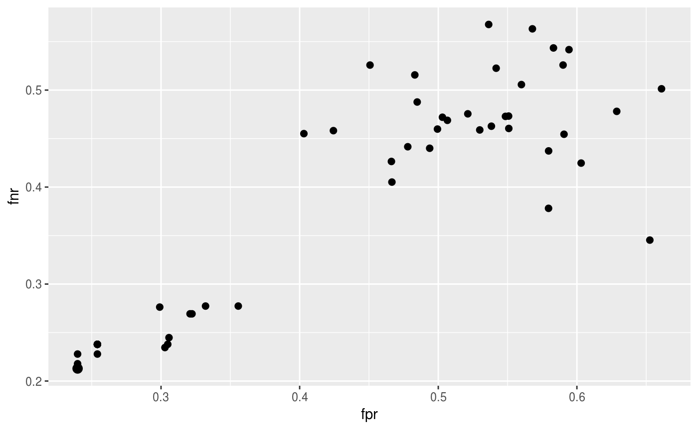

Often, data sets include a large number of features. The technique of extracting a subset of relevant features is called feature selection. Feature selection can enhance the interpretability of the model, speed up the learning process and improve the learner performance. There exist different approaches to identify the relevant features. mlr supports filter and wrapper methods.
Filter methods
Filter methods assign an importance value to each feature. Based on these values the features can be ranked and a feature subset can be selected.
Calculating the feature importance
Different methods for calculating the feature importance are built into mlr’s function generateFilterValuesData() (getFilterValues() has been deprecated in favor of generateFilterValuesData()). Currently, classification, regression and survival analysis tasks are supported. A table showing all available methods can be found in article filter methods.
Function generateFilterValuesData() requires the Task() and a character string specifying the filter method.
fv = generateFilterValuesData(iris.task, method = "information.gain")
fv
## FilterValues:
## Task: iris-example
## name type information.gain
## 1 Sepal.Length numeric 0.4521286
## 2 Sepal.Width numeric 0.2672750
## 3 Petal.Length numeric 0.9402853
## 4 Petal.Width numeric 0.9554360fv is a FilterValues() object and fv$data contains a data.frame that gives the importance values for all features. Optionally, a vector of filter methods can be passed.
fv2 = generateFilterValuesData(iris.task, method = c("information.gain", "chi.squared"))
fv2$data
## name type information.gain chi.squared
## 1 Sepal.Length numeric 0.4521286 0.6288067
## 2 Sepal.Width numeric 0.2672750 0.4922162
## 3 Petal.Length numeric 0.9402853 0.9346311
## 4 Petal.Width numeric 0.9554360 0.9432359A bar plot of importance values for the individual features can be obtained using function plotFilterValues().

By default plotFilterValues() will create facetted subplots if multiple filter methods are passed as input to generateFilterValuesData().
There is also an experimental ggvis plotting function, plotFilterValuesGGVIS(). This takes the same arguments as plotFilterValues() and produces a shiny application that allows the interactive selection of the displayed filter method, the number of features selected, and the sorting method (e.g., ascending or descending).
According to the "information.gain" measure, Petal.Width and Petal.Length contain the most information about the target variable Species.
Selecting a feature subset
With mlr’s function filterFeatures() you can create a new Task() by leaving out features of lower importance.
There are several ways to select a feature subset based on feature importance values:
- Keep a certain absolute number (
abs) of features with highest importance. - Keep a certain percentage (
perc) of features with highest importance. - Keep all features whose importance exceeds a certain threshold value (
threshold).
Function filterFeatures() supports these three methods as shown in the following example. Moreover, you can either specify the method for calculating the feature importance or you can use previously computed importance values via argument fval.
# Keep the 2 most important features
filtered.task = filterFeatures(iris.task, method = "information.gain", abs = 2)
# Keep the 25% most important features
filtered.task = filterFeatures(iris.task, fval = fv, perc = 0.25)
# Keep all features with importance greater than 0.5
filtered.task = filterFeatures(iris.task, fval = fv, threshold = 0.5)
filtered.task
## Supervised task: iris-example
## Type: classif
## Target: Species
## Observations: 150
## Features:
## numerics factors ordered functionals
## 2 0 0 0
## Missings: FALSE
## Has weights: FALSE
## Has blocking: FALSE
## Has coordinates: FALSE
## Classes: 3
## setosa versicolor virginica
## 50 50 50
## Positive class: NAFuse a learner with a filter method
Often feature selection based on a filter method is part of the data preprocessing and in a subsequent step a learning method is applied to the filtered data. In a proper experimental setup you might want to automate the selection of the features so that it can be part of the validation method of your choice. A Learner (makeLearner()) can be fused with a filter method by function makeFilterWrapper(). The resulting Learner (makeLearner()) has the additional class attribute FilterWrapper().
In the following example we calculate the 10-fold cross-validated error rate mmce of the k-nearest neighbor classifier (FNN::fnn()) with preceding feature selection on the iris (datasets::iris()) data set. We use "information.gain" as importance measure and select the 2 features with highest importance. In each resampling iteration feature selection is carried out on the corresponding training data set before fitting the learner.
lrn = makeFilterWrapper(learner = "classif.fnn", fw.method = "information.gain", fw.abs = 2)
rdesc = makeResampleDesc("CV", iters = 10)
r = resample(learner = lrn, task = iris.task, resampling = rdesc, show.info = FALSE, models = TRUE)
r$aggr
## mmce.test.mean
## 0.04You may want to know which features have been used. Luckily, we have called resample() with the argument models = TRUE, which means that r$models contains a list of models (makeWrappedModel()) fitted in the individual resampling iterations. In order to access the selected feature subsets we can call getFilteredFeatures() on each model.
sfeats = sapply(r$models, getFilteredFeatures)
table(sfeats)
## sfeats
## Petal.Length Petal.Width
## 10 10The selection of features seems to be very stable. The features Sepal.Length and Sepal.Width did not make it into a single fold.
Tuning the size of the feature subset
In the above examples the number/percentage of features to select or the threshold value have been arbitrarily chosen. If filtering is a preprocessing step before applying a learning method optimal values with regard to the learner performance can be found by tuning.
In the following regression example we consider the BostonHousing (mlbench::BostonHousing()) data set. We use a linear regression model and determine the optimal percentage value for feature selection such that the 3-fold cross-validated mean squared error (mse()) of the learner is minimal. As search strategy for tuning a grid search is used.
lrn = makeFilterWrapper(learner = "regr.lm", fw.method = "chi.squared")
ps = makeParamSet(makeDiscreteParam("fw.perc", values = seq(0.2, 0.5, 0.05)))
rdesc = makeResampleDesc("CV", iters = 3)
res = tuneParams(lrn, task = bh.task, resampling = rdesc, par.set = ps,
control = makeTuneControlGrid())
## [Tune] Started tuning learner regr.lm.filtered for parameter set:
## Type len Def Constr Req Tunable Trafo
## fw.perc discrete - - 0.2,0.25,0.3,0.35,0.4,0.45,0.5 - TRUE -
## With control class: TuneControlGrid
## Imputation value: Inf
## [Tune-x] 1: fw.perc=0.2
## [Tune-y] 1: mse.test.mean=46.2954224; time: 0.0 min
## [Tune-x] 2: fw.perc=0.25
## [Tune-y] 2: mse.test.mean=46.2954224; time: 0.0 min
## [Tune-x] 3: fw.perc=0.3
## [Tune-y] 3: mse.test.mean=33.3567785; time: 0.0 min
## [Tune-x] 4: fw.perc=0.35
## [Tune-y] 4: mse.test.mean=28.9354482; time: 0.0 min
## [Tune-x] 5: fw.perc=0.4
## [Tune-y] 5: mse.test.mean=28.9354482; time: 0.0 min
## [Tune-x] 6: fw.perc=0.45
## [Tune-y] 6: mse.test.mean=28.6355444; time: 0.0 min
## [Tune-x] 7: fw.perc=0.5
## [Tune-y] 7: mse.test.mean=28.6355444; time: 0.0 min
## [Tune] Result: fw.perc=0.45 : mse.test.mean=28.6355444
res
## Tune result:
## Op. pars: fw.perc=0.45
## mse.test.mean=28.6355444The performance of all percentage values visited during tuning is:
as.data.frame(res$opt.path)
## fw.perc mse.test.mean dob eol error.message exec.time
## 1 0.2 46.29542 1 NA <NA> 0.258
## 2 0.25 46.29542 2 NA <NA> 0.199
## 3 0.3 33.35678 3 NA <NA> 0.497
## 4 0.35 28.93545 4 NA <NA> 0.188
## 5 0.4 28.93545 5 NA <NA> 0.202
## 6 0.45 28.63554 6 NA <NA> 0.219
## 7 0.5 28.63554 7 NA <NA> 0.194The optimal percentage and the corresponding performance can be accessed as follows:
After tuning we can generate a new wrapped learner with the optimal percentage value for further use.
lrn = makeFilterWrapper(learner = "regr.lm", fw.method = "chi.squared", fw.perc = res$x$fw.perc)
mod = train(lrn, bh.task)
mod
## Model for learner.id=regr.lm.filtered; learner.class=FilterWrapper
## Trained on: task.id = BostonHousing-example; obs = 506; features = 13
## Hyperparameters: fw.method=chi.squared,fw.perc=0.45
getFilteredFeatures(mod)
## [1] "crim" "zn" "rm" "dis" "rad" "lstat"Here is another example using multi-criteria tuning. We consider linear discriminant analysis (MASS::lda()) with precedent feature selection based on the Chi-squared statistic of independence ("chi.squared") on the Sonar (mlbench::sonar()) data set and tune the threshold value. During tuning both, the false positive and the false negative rate fpr and fnr), are minimized. As search strategy we choose a random search (see makeTuneMultiCritControlRandom (?TuneMultiCritControl()).
lrn = makeFilterWrapper(learner = "classif.lda", fw.method = "chi.squared")
ps = makeParamSet(makeNumericParam("fw.threshold", lower = 0.1, upper = 0.9))
rdesc = makeResampleDesc("CV", iters = 10)
res = tuneParamsMultiCrit(lrn, task = sonar.task, resampling = rdesc, par.set = ps,
measures = list(fpr, fnr), control = makeTuneMultiCritControlRandom(maxit = 50L),
show.info = FALSE)
res
## Tune multicrit result:
## Points on front: 1
head(as.data.frame(res$opt.path))
## fw.threshold fpr.test.mean fnr.test.mean dob eol error.message exec.time
## 1 0.7605807 0.4665554 0.4051604 1 NA <NA> 1.689
## 2 0.6040801 0.5907126 0.4544764 2 NA <NA> 1.390
## 3 0.7261262 0.4661980 0.4264125 3 NA <NA> 1.164
## 4 0.8662842 0.5363617 0.5676737 4 NA <NA> 0.920
## 5 0.4068624 0.3223421 0.2693110 5 NA <NA> 0.911
## 6 0.2980690 0.2398096 0.2129113 6 NA <NA> 0.997The results can be visualized with function plotTuneMultiCritResult(). The plot shows the false positive and false negative rates for all parameter values visited during tuning. The size of the points on the Pareto front is slightly increased.

Wrapper methods
Wrapper methods use the performance of a learning algorithm to assess the usefulness of a feature set. In order to select a feature subset a learner is trained repeatedly on different feature subsets and the subset which leads to the best learner performance is chosen.
In order to use the wrapper approach we have to decide:
- How to assess the performance: This involves choosing a performance measure that serves as feature selection criterion and a resampling strategy.
- Which learning method to use.
- How to search the space of possible feature subsets.
The search strategy is defined by functions following the naming convention makeFeatSelControl<search_strategy. The following search strategies are available:
- Exhaustive search
makeFeatSelControlExhaustive(?FeatSelControl()), - Genetic algorithm
makeFeatSelControlGA(?FeatSelControl()), - Random search
makeFeatSelControlRandom(?FeatSelControl()), - Deterministic forward or backward search
makeFeatSelControlSequential(?FeatSelControl()).
Select a feature subset
Feature selection can be conducted with function selectFeatures().
In the following example we perform an exhaustive search on the Wisconsin Prognostic Breast Cancer (TH.data::wpbc()) data set. As learning method we use the Cox proportional hazards model (survival::coxph()). The performance is assessed by the holdout estimate of the concordance index cindex).
# Specify the search strategy
ctrl = makeFeatSelControlRandom(maxit = 20L)
ctrl
## FeatSel control: FeatSelControlRandom
## Same resampling instance: TRUE
## Imputation value: <worst>
## Max. features: <not used>
## Max. iterations: 20
## Tune threshold: FALSE
## Further arguments: prob=0.5ctrl is aFeatSelControl() object that contains information about the search strategy and potential parameter values.
# Resample description
rdesc = makeResampleDesc("Holdout")
# Select features
sfeats = selectFeatures(learner = "surv.coxph", task = wpbc.task, resampling = rdesc,
control = ctrl, show.info = FALSE)
sfeats
## FeatSel result:
## Features (17): mean_radius, mean_compactness, mean_concavepoints, mean_fractaldim, SE_texture, SE_area, SE_compactness, SE_concavity, worst_radius, worst_perimeter, worst_area, worst_smoothness, worst_compactness, worst_concavity, worst_symmetry, worst_fractaldim, pnodes
## cindex.test.mean=0.8310680sfeatsis a FeatSelResult (selectFeatures()) object. The selected features and the corresponding performance can be accessed as follows:
sfeats$x
## [1] "mean_radius" "mean_compactness" "mean_concavepoints"
## [4] "mean_fractaldim" "SE_texture" "SE_area"
## [7] "SE_compactness" "SE_concavity" "worst_radius"
## [10] "worst_perimeter" "worst_area" "worst_smoothness"
## [13] "worst_compactness" "worst_concavity" "worst_symmetry"
## [16] "worst_fractaldim" "pnodes"
sfeats$y
## cindex.test.mean
## 0.831068In a second example we fit a simple linear regression model to the BostonHousing (mlbench::BostonHousing()) data set and use a sequential search to find a feature set that minimizes the mean squared error mse). method = "sfs" indicates that we want to conduct a sequential forward search where features are added to the model until the performance cannot be improved anymore. See the documentation page makeFeatSelControlSequential (?FeatSelControl()) for other available sequential search methods. The search is stopped if the improvement is smaller than alpha = 0.02.
# Specify the search strategy
ctrl = makeFeatSelControlSequential(method = "sfs", alpha = 0.02)
# Select features
rdesc = makeResampleDesc("CV", iters = 10)
sfeats = selectFeatures(learner = "regr.lm", task = bh.task, resampling = rdesc, control = ctrl,
show.info = FALSE)
sfeats
## FeatSel result:
## Features (10): crim, zn, nox, rm, dis, rad, tax, ptratio, b, lstat
## mse.test.mean=23.7480471Further information about the sequential feature selection process can be obtained by function analyzeFeatSelResult().
analyzeFeatSelResult(sfeats)
## Features : 10
## Performance : mse.test.mean=23.7480471
## crim, zn, nox, rm, dis, rad, tax, ptratio, b, lstat
##
## Path to optimum:
## - Features: 0 Init : Perf = 84.76 Diff: NA *
## - Features: 1 Add : lstat Perf = 38.686 Diff: 46.075 *
## - Features: 2 Add : rm Perf = 31.238 Diff: 7.4478 *
## - Features: 3 Add : ptratio Perf = 27.91 Diff: 3.3274 *
## - Features: 4 Add : dis Perf = 27.134 Diff: 0.77673 *
## - Features: 5 Add : nox Perf = 25.656 Diff: 1.4773 *
## - Features: 6 Add : b Perf = 25.134 Diff: 0.522 *
## - Features: 7 Add : zn Perf = 24.897 Diff: 0.23713 *
## - Features: 8 Add : crim Perf = 24.711 Diff: 0.18587 *
## - Features: 9 Add : rad Perf = 24.338 Diff: 0.37304 *
## - Features: 10 Add : tax Perf = 23.748 Diff: 0.59033 *
##
## Stopped, because no improving feature was found.Fuse a learner with feature selection
A Learner (makeLearner()) can be fused with a feature selection strategy (i.e., a search strategy, a performance measure and a resampling strategy) by function makeFeatSelWrapper(). During training features are selected according to the specified selection scheme. Then, the learner is trained on the selected feature subset.
rdesc = makeResampleDesc("CV", iters = 3)
lrn = makeFeatSelWrapper("surv.coxph", resampling = rdesc,
control = makeFeatSelControlRandom(maxit = 10), show.info = FALSE)
mod = train(lrn, task = wpbc.task)
mod
## Model for learner.id=surv.coxph.featsel; learner.class=FeatSelWrapper
## Trained on: task.id = wpbc-example; obs = 194; features = 32
## Hyperparameters:The result of the feature selection can be extracted by function getFeatSelResult().
sfeats = getFeatSelResult(mod)
sfeats
## FeatSel result:
## Features (19): mean_perimeter, mean_area, mean_smoothness, mean_concavity, mean_concavepoints, mean_symmetry, mean_fractaldim, SE_radius, SE_texture, SE_perimeter, SE_smoothness, SE_compactness, SE_concavepoints, SE_symmetry, worst_texture, worst_perimeter, worst_concavepoints, worst_symmetry, pnodes
## cindex.test.mean=0.6642005The selected features are:
sfeats$x
## [1] "mean_perimeter" "mean_area" "mean_smoothness"
## [4] "mean_concavity" "mean_concavepoints" "mean_symmetry"
## [7] "mean_fractaldim" "SE_radius" "SE_texture"
## [10] "SE_perimeter" "SE_smoothness" "SE_compactness"
## [13] "SE_concavepoints" "SE_symmetry" "worst_texture"
## [16] "worst_perimeter" "worst_concavepoints" "worst_symmetry"
## [19] "pnodes"The 5-fold cross-validated performance of the learner specified above can be computed as follows:
out.rdesc = makeResampleDesc("CV", iters = 5)
r = resample(learner = lrn, task = wpbc.task, resampling = out.rdesc, models = TRUE,
show.info = FALSE)
r$aggr
## cindex.test.mean
## 0.603356The selected feature sets in the individual resampling iterations can be extracted as follows:
lapply(r$models, getFeatSelResult)
## [[1]]
## FeatSel result:
## Features (15): mean_perimeter, mean_area, mean_concavity, SE_radius, SE_area, SE_compactness, SE_concavity, SE_concavepoints, SE_symmetry, worst_perimeter, worst_compactness, worst_concavity, worst_symmetry, worst_fractaldim, pnodes
## cindex.test.mean=0.6665849
##
## [[2]]
## FeatSel result:
## Features (14): mean_texture, mean_area, mean_smoothness, mean_compactness, mean_fractaldim, SE_smoothness, SE_symmetry, SE_fractaldim, worst_radius, worst_perimeter, worst_concavepoints, worst_symmetry, tsize, pnodes
## cindex.test.mean=0.7085455
##
## [[3]]
## FeatSel result:
## Features (13): mean_perimeter, mean_smoothness, mean_concavity, mean_concavepoints, mean_fractaldim, SE_perimeter, SE_smoothness, SE_symmetry, SE_fractaldim, worst_radius, worst_texture, worst_smoothness, pnodes
## cindex.test.mean=0.6578916
##
## [[4]]
## FeatSel result:
## Features (14): mean_smoothness, mean_concavepoints, mean_fractaldim, SE_texture, SE_perimeter, SE_area, SE_concavity, SE_concavepoints, worst_radius, worst_perimeter, worst_concavepoints, worst_fractaldim, tsize, pnodes
## cindex.test.mean=0.5990501
##
## [[5]]
## FeatSel result:
## Features (14): mean_perimeter, mean_area, mean_smoothness, mean_compactness, mean_symmetry, SE_texture, SE_perimeter, SE_compactness, SE_symmetry, SE_fractaldim, worst_radius, worst_area, tsize, pnodes
## cindex.test.mean=0.6351437